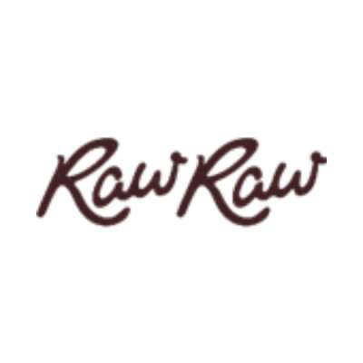
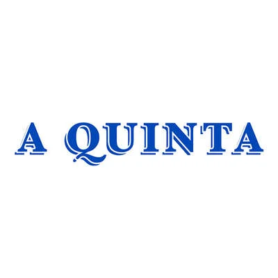
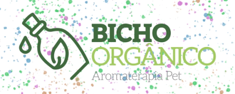

Sua marca pode fazer parte da rotina de quem ama e cuida de animais.
A Médica do Pet une autoridade veterinária, comunicação que gera identificação e uma comunidade de 128 mil pessoas — tutores que compram com base em confiança, não em impulso.
Números documentados no Mídia Kit 2026. Alcance mensal, distribuição geográfica e perfil demográfico completo da audiência estão em confirmação junto ao Instagram Insights e serão publicados assim que validados.
Por que trabalhar com @medicadopet
Autoridade técnica
Médica-veterinária com especialização em medicina integrativa — credibilidade impossível de fabricar.
Engajamento excepcional
Taxa qualitativa de até 9,26% — 4× acima da média do setor.
Audiência compradora
Tutores emocionalmente comprometidos com a saúde do pet, com alta intenção de compra.
Conteúdo duradouro
Reels continuam gerando engajamento 90+ semanas depois — o retorno se estende muito além da veiculação.
Formatos de parceria
Reel dedicado
Conteúdo exclusivo sobre a marca, 60–90s. Máxima exposição e personalização da mensagem.
Reel de integração natural
Produto em contexto editorial. Alta autenticidade — a audiência percebe como recomendação genuína.
Carrossel educativo
8–10 páginas com integração do produto. Alto índice de salvamentos — presença duradoura no feed.
Sequência de stories
5–7 stories com caixinha de perguntas. Gera interação direta e dados de interesse da audiência.
Live com Q&A
Aparição em live educativa mensal, 45 min. Exposição a audiência engajada em tempo real.
Embaixadoria mensal
Presença contínua por 3–12 meses. Construção de autoridade duradoura para a marca no nicho.
Valores sob consulta
Cada proposta é montada conforme o escopo, o período de veiculação, os direitos de uso e a exclusividade. Envie seu briefing e respondemos com uma proposta personalizada e o Mídia Kit 2026.
Marcas parceiras



Vamos conversar sobre sua marca?
Estamos prontos para construir juntos uma parceria que gera resultado real — para a sua marca e para os pets do Brasil.